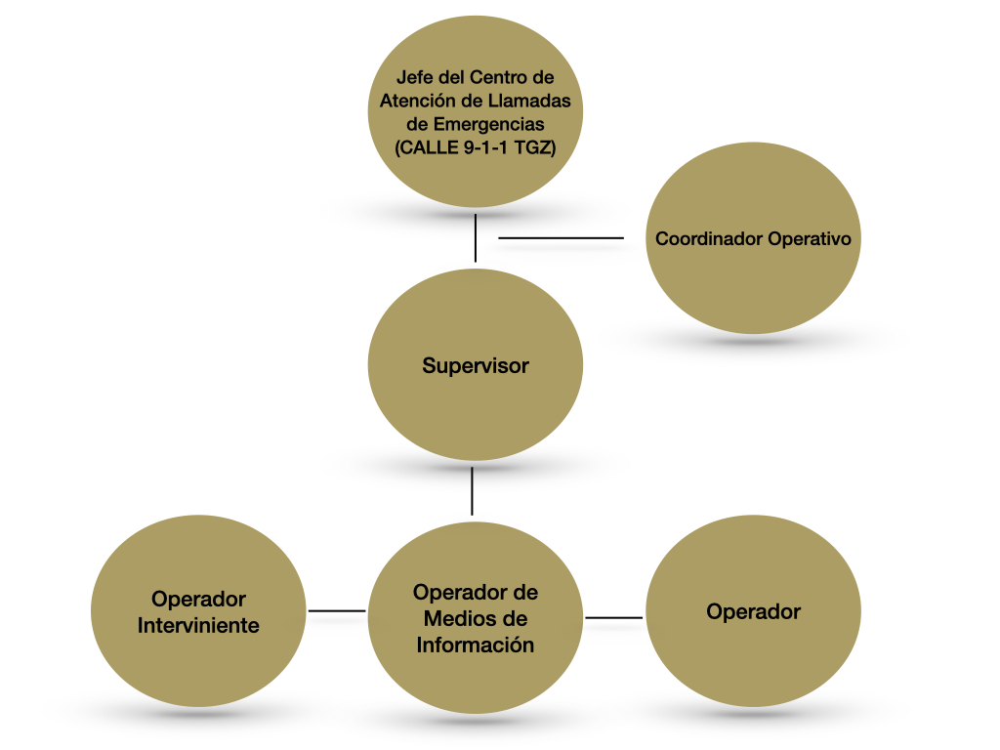

Diferencias entre CALLE 9-1-1 TGZ y CADA 0-89
- CALLE 9-1-1:
- Se encarga de la atención oportuna de las emergencias que enfrenta la población por desastres naturales, accidentes o por la comisión de algún delito, permite contrarrestar sus efectos sobre la integridad, la vida y el patrimonio de las personas.
- CADA 0-89:
- Es encargado de recibir y canalizar a la autoridad investigadora competente las quejas, denuncias, peticiones y sugerencias de la ciudadanía, en caso de corrupción de servidores públicos o por mal servicio proporcionado.
Sistema de Gestión de Calidad
Es un conjunto de elementos que interactúan para establecer políticas, objetivos y procesos con el fin de lograr el cumplimiento de la Norma Internacional ISO 9001:2015 Sistema de Gestión de Calidad-Requisitos.
A través del Catálogo de Perfil de Cargos (CAT-DEC5-PECA) se asignan las responsabilidades y autoridades para cada uno de los procesos, estableciendo las funciones que realizarán en cada uno de los cargos.
En el Centro de Atención de Emergencias (CALLE) 9-1-1 Tuxtla Gutiérrez cuenta con Manuales , Planes y Catálogos de Perfil de Cargos, los cuales permiten que se trabaje de manera coordinada y homologada.
Cada uno de ellos se presenta disponible para el personal.
En la Dirección Estatal de Coordinación, Control, Comando, Comunicación, Cómputo, existen: